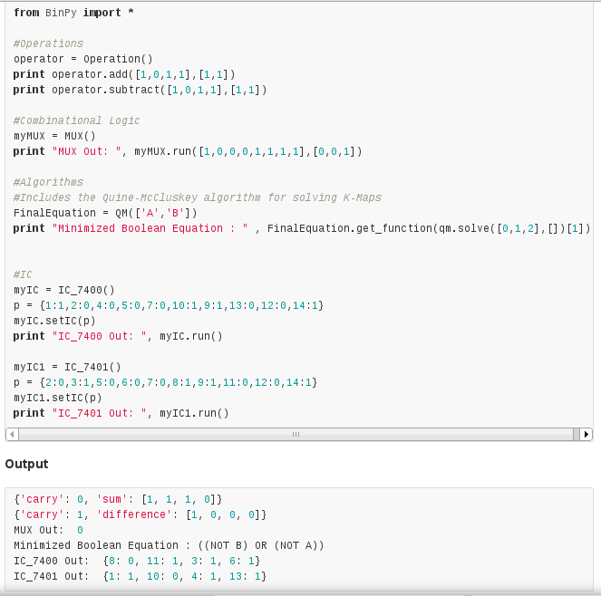

Google Summer of Code 2014 Ideas
How to use BinPy
Introduction
It is a library which will serve as a base to develop circuit based applications and educational software on top of it. BinPy is a clear representation of fundamentals. Everything has been written from scratch such as gates, logical operations, etc. This package does not depend on any external library other than pure Python.
We want to extend the hardware programming concepts to Python. We are looking for extremely motivated developers who are willing to break amazing things.
We look forward to add more and more features to this project which simplifies user experience in the world of hardware designing and simulation.
Getting Started
We use GitHub for project management and collaborations.
Setting up development environment for BinPy is pretty easy. You just need to have Python installed on your computer.
Install using pip
sudo apt-get install pip setuptools ipython
sudo pip install https://github.com/BinPy/BinPy/zipball/master
Install using git
sudo apt-get install git setuptools ipython
git clone https://github.com/BinPy/BinPy.git
cd BinPy/
sudo python setup.py install
That's all! Start contributing!
For further queries mail us at binpylib@gmail.com or join our Google group(binpy@googlegroups.com)
Example

Project Ideas
1. Extending Core Libraries and Classes
Description : The scope of algorithms and gates used in hardware design are numerous.
Some basic work has been done and important gates, ICs and algorithms have been implemented but we would like
to further expand our libraries to various other aspects of digital electronics. Visit our homepage
BinPy to view some of the work already done.
For instance, you can develop more integrated circuit libraries as the no of ICs are numerous, also you can develop
on vaious algorithms used in hardware design to reduce the circuit size so that user can directly develop
on that without having to reduce the size of circuit himself. You can see our IC classes and algorithms
for example.
Addition of following features will increase the use cases of the project.
- Introduction of problem solving algorithms
- Addition of Microprocessors and Analog Devices
- Generation of Verilog code from design
Difficulty : Medium
Requirements : Experience in Python and hardware design
Contacts: Abhinav Gupta and Jay Rambhia
2. Circuit Design Software
Description : Creating a GUI using Python and Qt where you can directly drag and drop elemets like wires , gates, ICs, etc and connect them to our Python code. This will reduce the amount of programming to be done by the user by a huge margin so that even amature programmers and even the hardware designers can start off easily.
There's a free and open source software called KiCad which is very useful in designing PCBs. But it doesn't have feature to simulate the design. We want to start with a simple circuit designing software which should also be capable of realtime simulation.
Ultimate goal of this software is to generate Verilog HDL code from the design itself.
Here are few type of simulations you can work on:
- Transistor simulation – low-level transistor-simulation of a schematic/layout's behavior, accurate at device-level.
- Logic simulation – digital-simulation of an RTL or gate-netlist's digital (boolean 0/1) behavior, accurate at boolean-level.
- Behavioral Simulation – high-level simulation of a design's architectural operation, accurate at cycle-level or interface-level.
- Hardware emulation – Use of special purpose hardware to emulate the logic of a proposed design. Can sometimes be plugged into a system in place of a yet-to-be-built chip; this is called in-circuit emulation.
Technology CAD simulate and analyze the underlying process technology. Electrical properties of devices are derived directly from device physics.
- Electromagnetic field solvers, or just field solvers, solve Maxwell's equations directly for cases of interest in IC and PCB design. They are known for being slower but more accurate than the layout extraction above.
Difficulty : Hard
Requirements : Experience in Qt and Python
Contacts: Himanshu Singh and Subodh Kohle

3. Development of Interactive Educational Software
Description : While creating BinPy, it was always kept in mind to make it as descriptive as possible. Since all the components have been made from scratch, developing an educational software to teach people electronics is a very good idea.
Following features can be implemented in the software:
- Demonstration of things like working of gates, flip flops, counters and many other components will enrich people's understanding of electronics. Above all it will be more effective if they do it on their own.
- The user interface should be clean and simple just like a bread board where users put components and connect them with ease.
- Current flow should be visible at intermediate stages.
- Clock speed should be user controllable.
Difficulty : Medium
Requirements : Experience in Qt and Python
Contacts: Subodh Kohle and Jay Rambhia
4. Documentation, Examples and Tutorials
Description : BinPy is a great tool for hardware designers and novice programmers who want to design various complicated circuits. It reduces the work effort required in other simulation tools present right now by many folds. It is a great way to bring hardware to masses through python. But this BinPy API lacks a good tutorial section. So most of the time, people find it difficult to start their projects with BinPy. We would like someone to study BinPy API properly and make a proper tutorial and documentation for BinPy.
Difficulty : Easy
Requirements : Experience in Python
Contacts: Anant Kamath
These ideas are just for reference but we would like developers to come up with their own ideas on various algorithms and circuits that are being used in harware design so that user can start developing on top of these.